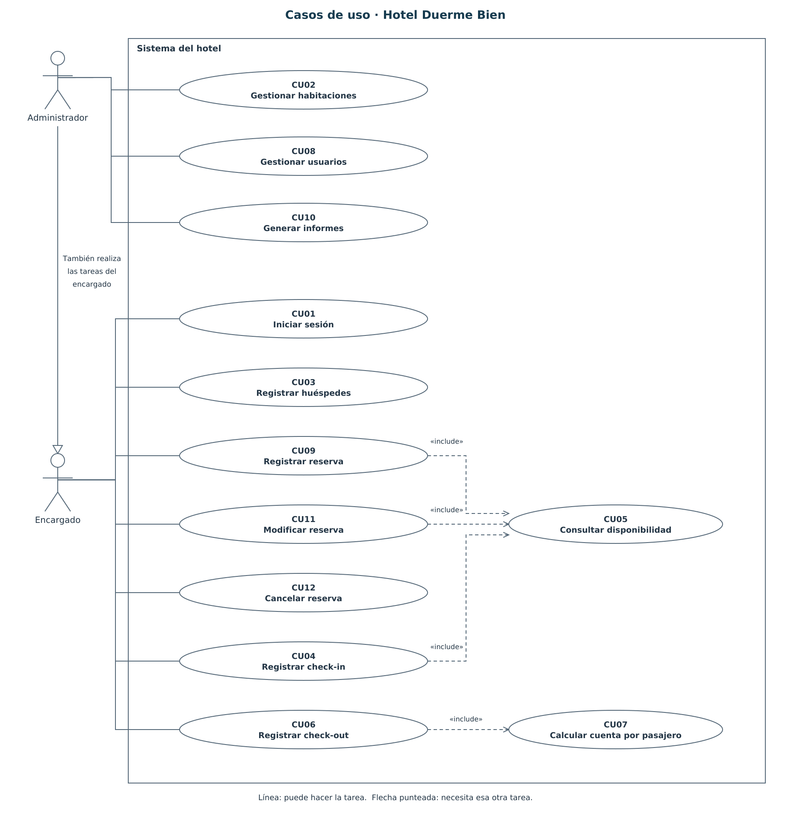
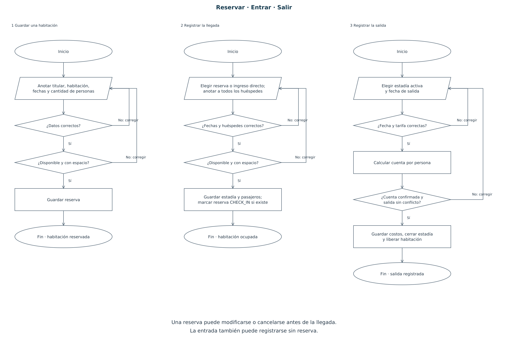
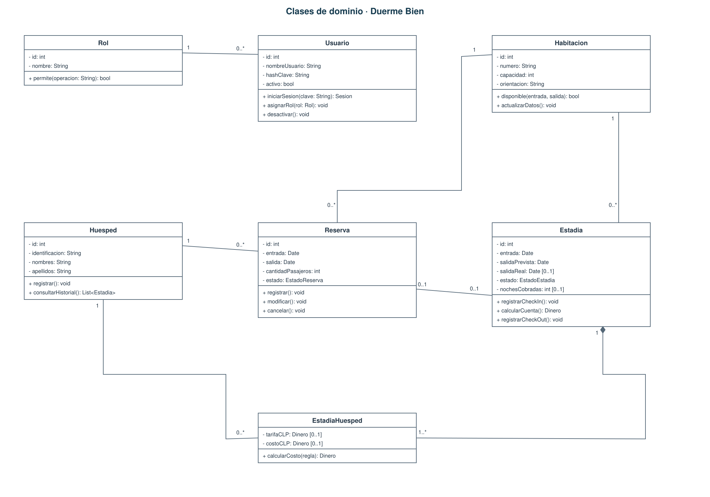
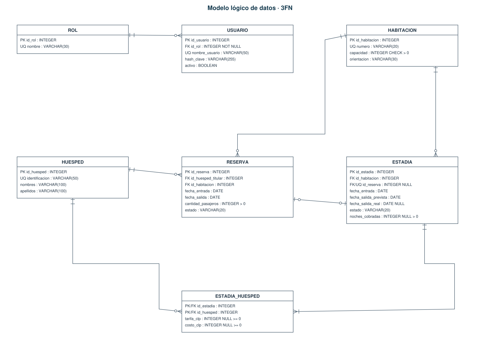
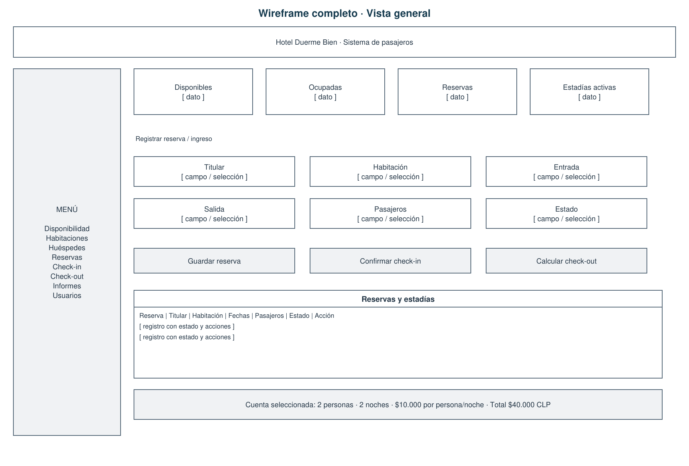
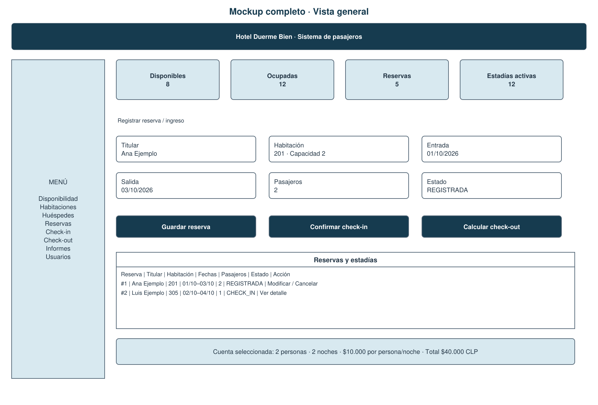
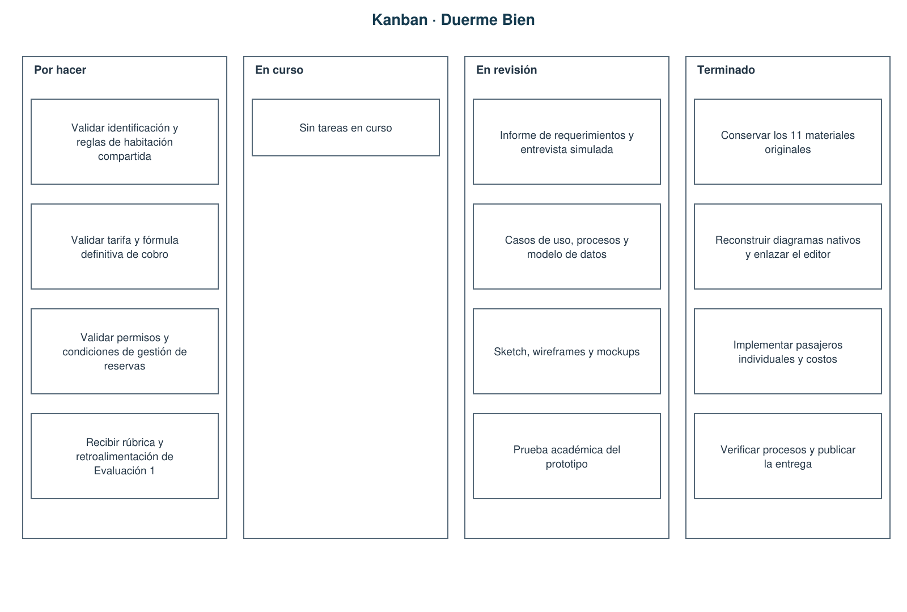

Casos de uso
Quién hace cada tarea


Diagrama de flujo
Reservar, llegar y salir


Diagrama de clases
Las partes del sistema


Base de datos
Dónde se guardan los datos


Wireframe
Dónde va cada botón


Mockup
Cómo se verá el sistema


Kanban
Qué está hecho y qué falta

